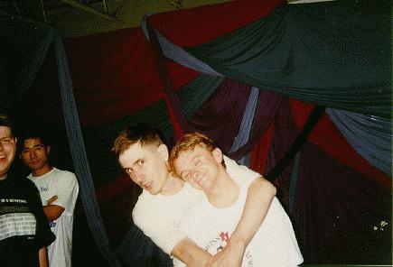
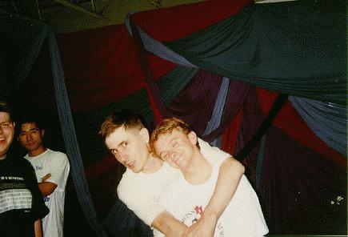

this was my first show. it was amazing. completely amazing. john opened
with alpha omega, and the show did nothing but get better. i screamed for
sail on (just like every show), and did not get it (just like every show).
alastair was really good. i had never seen him live before. he and john
did a couple of songs. the violin sounded amazing against john's guitar.
well, enough of my rambling. here are some pics. the first is john and
myself at tokyo rose after the show. the second is of john and kevin
ricker (the man who by playing beach house got me hooked on the whole
mountain goats thing)
 john and jon
john and jon

john and kevin
john and jon
 john and kevin